根据系统架构设计图，需要对服务网关进行集成，满足动态路由配置、认证鉴权、容错限流规则动态加载、负载均衡等要求，如图红色部分。
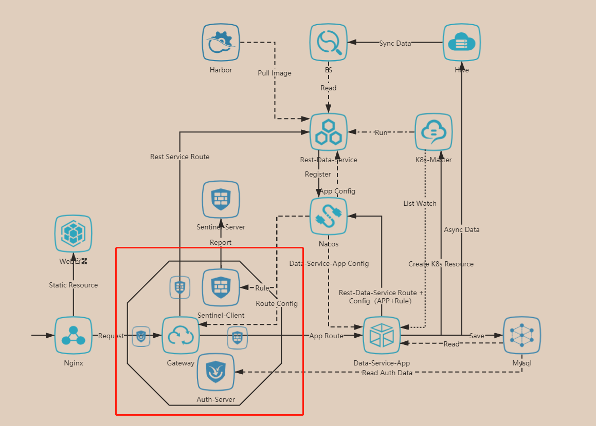
现基于Spring-Cloud-Gateway进行相关功能的集成、技术验证
动态配置 根据上述架构图，数据服务发布后，需要通过Rest API在Nacos上修改配置，及时生效的功能主要有：
（1）网关的路由配置文件，在网关上追加到服务的路由配置
（2）容错限流Sentinel的阈值设定，后期运维可能需要动态调整
Nacos Rest API
官方API说明
配置文件创建/修改 1 http://10.6.6.208:8848/nacos/v1/cs/configs
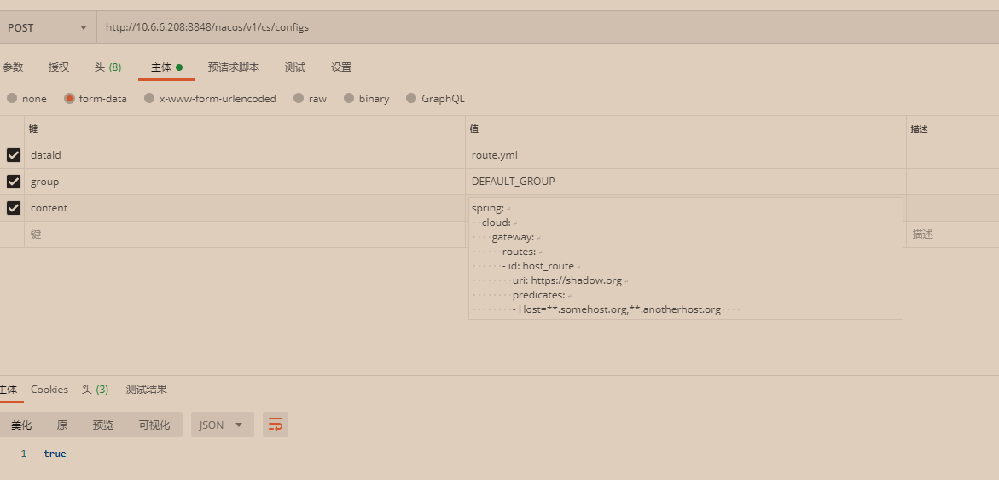 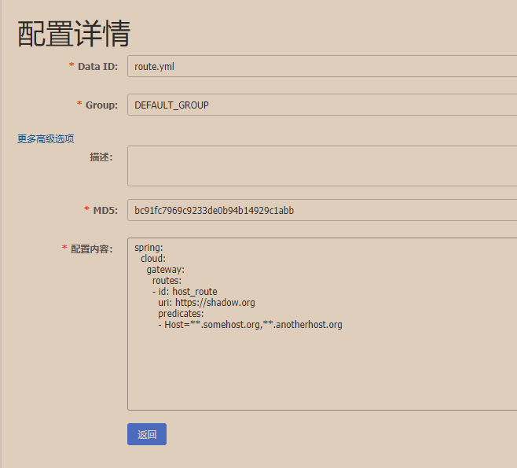
配置文件查询 1 http://10.6.6.208:8848/nacos/v1/cs/configs?dataId=gateway-routes.yml&group=DEFAULT_GROUP
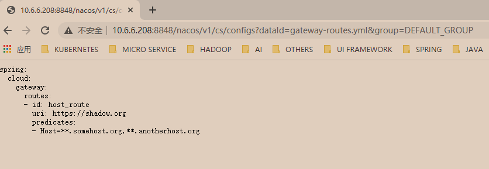
Gateway 动态刷新 Spring Cloud Gateway + Actuator可以暴露网关中配置的路由规则，需要搭配的配置如下：
1 2 3 4 5 management.endpoints.web.exposure.include=gateway management.endpoint.gateway.enabled=true 通过如下地址可以查看 http://10.6.3.39:18080/actuator/gateway/routes
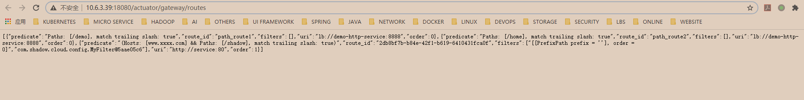
配合1.1.1中配置文件的Rest API可以实现动态路由。例如下图配置了使用负载均衡并使用path的断言：
1 2 3 4 5 6 7 8 9 10 11 12 spring: cloud: gateway: routes: - id: path_route1 uri: lb://demo-http-service:8888 predicates: - Path=/demo - id: path_route2 uri: lb://demo-http-service:8888 predicates: - Path=/home
只需要对这样一段字符串进行增删改的维护，应用就可以自行读取动态配置，如果使用JSON的配置文件格式，虽然更易于维护，但是因为应用只能使用properties或者是yml的配置文件，需要自己集成网关中的路由的增删改处理，Spring Cloud Gateway已也有相关支持的接口类。
Sentinel客户端使用Nacos Datasource Gateway整合Sentinel文档
Nacos Datasource Demo
要实现数据服务的动态容错限流，根据Sentinel官方的描述，推荐使用的方式是，将容错限流的规则推送到Nacos（可使用1.1中的Nacos Rest API），然后在Sentinel的客户端，集成Nacos的数据源，动态在内存中更新并使用这些规则。
推送JSON格式的规则 使用Postman推送JSON格式的Sentinel限流规则，这里仅仅设置了限流为1，使用Gateway中配置的route_id作为resource，更加复杂的规则设定可以通过抓取Sentinel dashboard的数据格式或者参照官网进行：
1 [{"resource" : "path_route1" ,"controlBehavior" : 0 ,"count" : 1 ,"grade" : 1 ,"limitApp" : "default" ,"strategy" : 0 }]
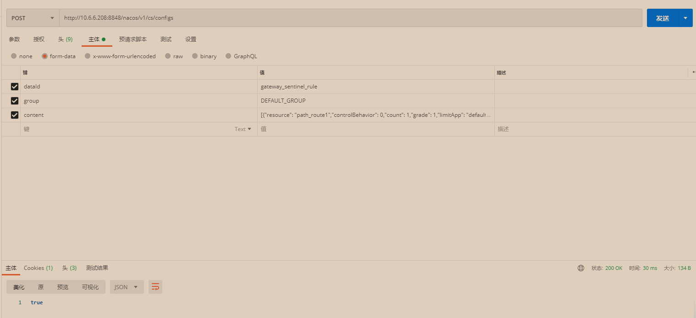
网关使用Nacos Datasource 在网关上需要设置Sentinel的filter，并为Sentinel注册Nacos的规则数据源
1 2 3 4 5 6 7 8 9 10 11 12 13 14 15 public void initNacosDatasource () String remoteAddress = "10.6.6.208" ; String groupId = "DEFAULT_GROUP" ; String dataId = "gateway_sentinel_rule" ; ReadableDataSource<String, Set<GatewayFlowRule>> flowRuleDataSource = new NacosDataSource<>(remoteAddress, groupId, dataId, source -> JSON.parseObject(source, new TypeReference<Set<GatewayFlowRule>>() { })); GatewayRuleManager.register2Property(flowRuleDataSource.getProperty()); }
启动服务之后，使用Postman推送规则，发现对应的服务被容错限流保护，修改限流数量为10，服务被放过部分后，继续熔断。
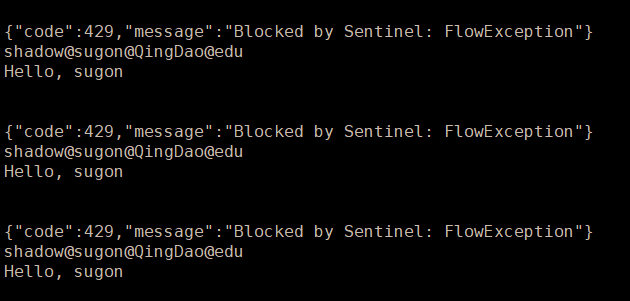 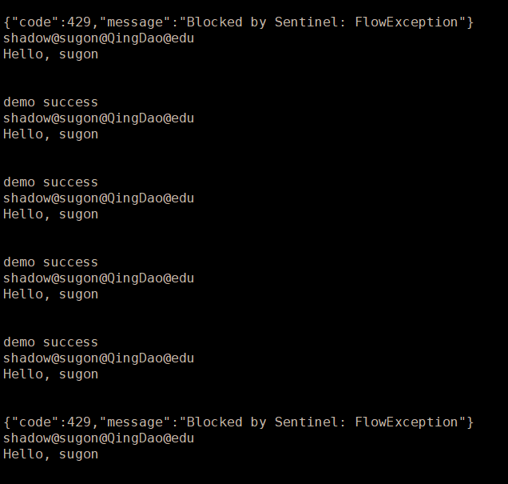
（1）这里有一点跟之前理解的不一样，将Sentinel的规则数据源换成Nacos后，dashboard失效。
（2）可以在 GatewayCallbackManager 注册回调进行定制
setBlockHandler：注册函数用于实现自定义的逻辑处理被限流的请求，对应接口为 BlockRequestHandler
默认实现为 DefaultBlockRequestHandler，当被限流时会返回类似于下面的错误信息：Blocked by Sentinel: FlowException
1 2 3 4 5 6 GatewayCallbackManager.setBlockHandler(new BlockRequestHandler() { @Override public Mono<ServerResponse> handleRequest (ServerWebExchange serverWebExchange, Throwable throwable) return null ; } });
认证鉴权 通常情况下，需要在网关上进行统一认证，而选在在网关上或者是子服务中鉴权，这里我们将鉴权交给子服务。
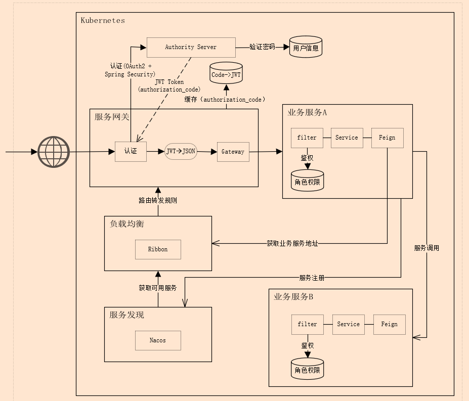
按照上述架构图设计，需要在各服务中集成oauth2 + Spring Security + JWT，主要分成三个部分：
认证服务 认证服务器，负责获取用户信息（包括基本信息、角色、功能权限等），生成JWT token。认证服务器支持四种模式：
密码模式 （1）首先客户端使用客户端凭证、用户名密码到授权服务器上换取token
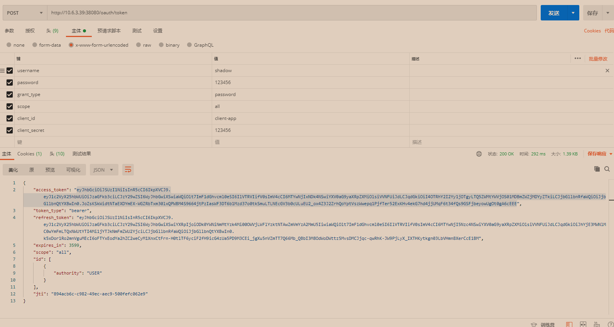
（2）使用换取的token到网关上访问具体的资源服务
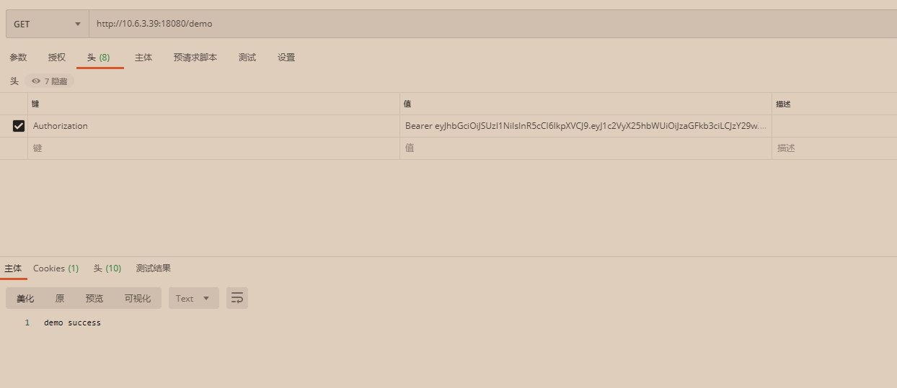
授权码模式 （1）首先访问认证服务器，如果是第一次，会要求输入用户名密码。认证通过后，需要选择是否授权（如果在认证服务器设置.autoApprove(true)可跳过手动授权这步）。
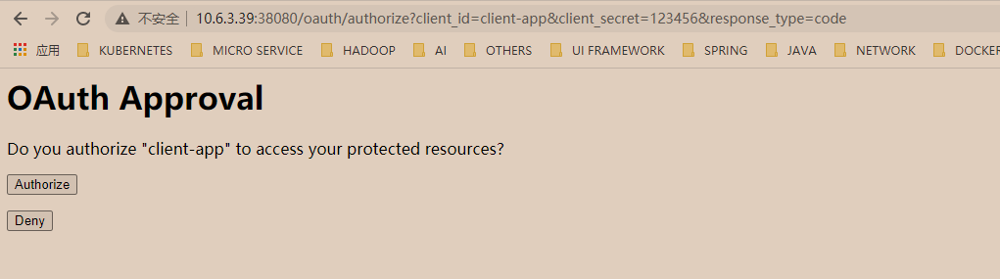
（2）授权码模式需要在授权服务器上配置一个回调地址（资源服务的地址），授权通过后，授权码通过这个地址回传。
（3）网关需要使用这个授权码到认证服务上换取jwt token，并且缓存这个token。
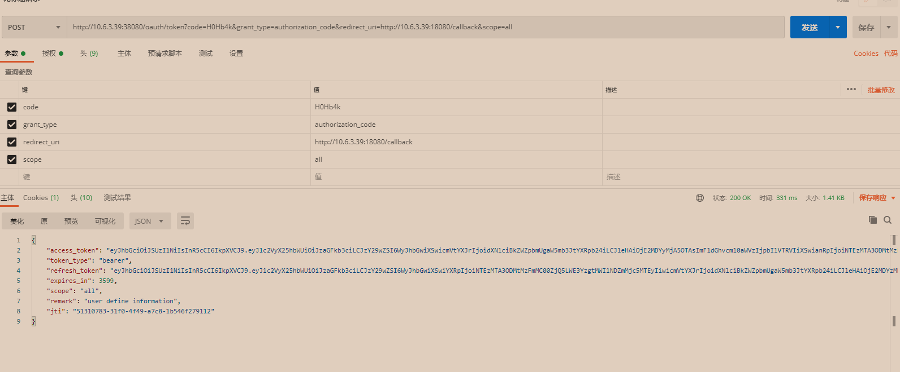 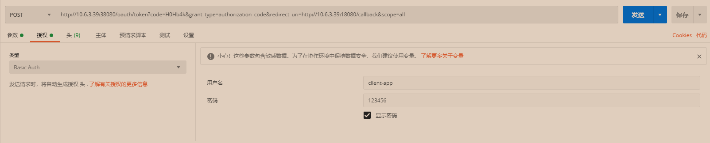
（4）客户端使用code访问网关，网关找出对应的jwt token，认证并使用其中的信息进行鉴权，决定是否可以访问对应的资源。
客户端模式 （1）客户端使用客户端凭证到认证服务器上获取token
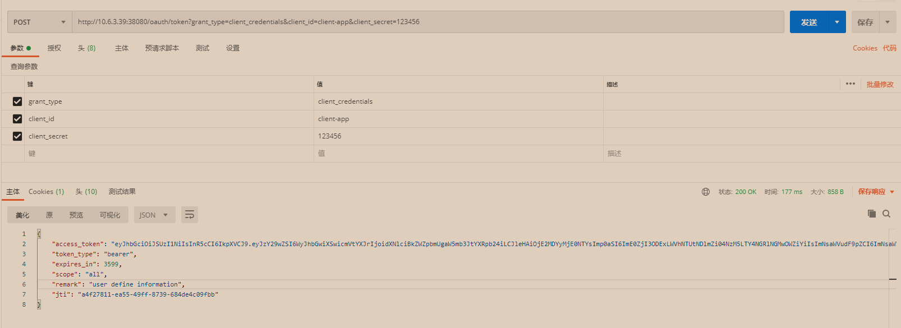
（2）使用上述获得的token，可以正常访问网关服务提供的资源。
简易模式 （1）相较于授权码模式，省去返回授权码的步骤，如果第一次登录需要输入用户名密码，并且选择是否授权（如果在认证服务器设置.autoApprove(true)可跳过手动授权这步），如果选择授权，直接返回token
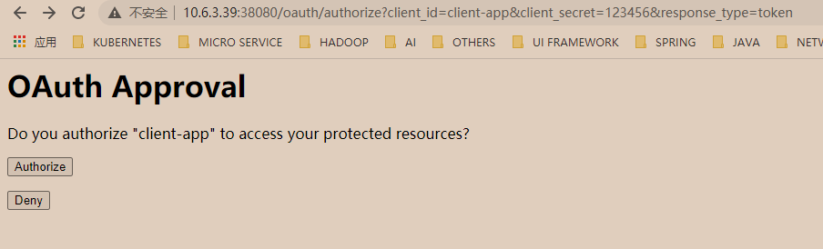
（2）使用上述获得的token，可以正常访问网关服务提供的资源。
网关服务 网关作为一种特殊的资源服务，本身虽然不提供资源，但是作为资源的统一访问转发服务，需要在其上集成认证（用户认证+接口认证）。
用户认证 使用授权码模式，并设定.autoApprove(true)跳过手动授权。
接口认证 使用客户端模式，认证服务后端接jdbc存储，动态生成客户端模式的客户凭证。可以通过代理获取token，将token返回给用户，用户使用token来访问具体的服务。
资源服务 各子服务，负责自身的鉴权（用户鉴权+接口鉴权）。
用户鉴权 系统的功能菜单、url权限存放在数据库中，子服务获取http header中的用户权限，比对即可进行相应的权限控制。
接口鉴权 子服务的url权限，存放在数据库中，用户可以通过UI动态调整url的权限信息，http header中存有客户端凭证信息，可据此进行权限控制。
数据权限 需要在子服务中根据组织机构、数据属主进行数据权限的过滤。
核心代码 认证服务 （1）Oauth2 Server
1 2 3 4 5 6 7 8 9 10 11 12 13 14 15 16 17 18 19 20 21 22 23 24 25 26 27 28 29 30 31 32 33 34 35 36 37 38 39 40 41 42 43 44 45 46 47 48 49 50 51 52 53 54 55 56 57 58 59 60 61 62 @AllArgsConstructor @Configuration @EnableAuthorizationServer public class OAuth2ServerConfig extends AuthorizationServerConfigurerAdapter private final PasswordEncoder passwordEncoder; private final SecurityUserService userDetailsService; private final AuthenticationManager authenticationManager; private final JwtTokenEnhancer jwtTokenEnhancer; @Override public void configure (ClientDetailsServiceConfigurer clients) throws Exception clients.inMemory() .withClient("client-app" ) .secret(passwordEncoder.encode("123456" )) .scopes("all" ) .authorizedGrantTypes("password" , "refresh_token" , "client_credentials" , "authorization_code" , "implicit" ) .accessTokenValiditySeconds(3600 ) .refreshTokenValiditySeconds(86400 ) .redirectUris("http://10.6.3.39:18080/callback" ) .autoApprove(true ); } @Override public void configure (AuthorizationServerEndpointsConfigurer endpoints) throws Exception TokenEnhancerChain enhancerChain = new TokenEnhancerChain(); List<TokenEnhancer> delegates = new ArrayList<>(); delegates.add(jwtTokenEnhancer); delegates.add(accessTokenConverter()); enhancerChain.setTokenEnhancers(delegates); endpoints.authenticationManager(authenticationManager) .userDetailsService(userDetailsService) .accessTokenConverter(accessTokenConverter()) .tokenEnhancer(enhancerChain); } @Override public void configure (AuthorizationServerSecurityConfigurer security) throws Exception security.tokenKeyAccess("isAuthenticated()" ).checkTokenAccess("isAuthenticated()" ).allowFormAuthenticationForClients(); } @Bean public JwtAccessTokenConverter accessTokenConverter () JwtAccessTokenConverter jwtAccessTokenConverter = new JwtAccessTokenConverter(); jwtAccessTokenConverter.setKeyPair(keyPair()); return jwtAccessTokenConverter; } @Bean public KeyPair keyPair () KeyStoreKeyFactory keyStoreKeyFactory = new KeyStoreKeyFactory(new ClassPathResource("jwt.jks" ), "123456" .toCharArray()); return keyStoreKeyFactory.getKeyPair("jwt" , "123456" .toCharArray()); } }
秘钥对生成：keytool -genkey -alias jwt -keyalg RSA -keypass 123456 -keystore jwt.jks -storepass 123456
-genkey 生成密钥 -alias 别名 -keyalg 密钥算法 -keypass 密钥口令 -keystore 生成密钥库的存储路径和名称 -storepass 密钥库口令
（2）Spring Security
1 2 3 4 5 6 7 8 9 10 11 12 13 14 15 16 17 18 19 20 21 22 23 24 25 26 27 28 29 30 31 32 33 34 35 36 37 38 39 40 @Configuration @EnableWebSecurity public class SecurityConfiguration extends WebSecurityConfigurerAdapter @Override protected void configure (AuthenticationManagerBuilder auth) throws Exception auth.inMemoryAuthentication() .passwordEncoder(passwordEncoder()) .withUser("shadow" ).password(passwordEncoder().encode("123456" )).authorities("USER" ) .and() .withUser("sugon" ).password(passwordEncoder().encode("123456" )).authorities("USER" ); } @Override protected void configure (HttpSecurity http) throws Exception http.authorizeRequests() .requestMatchers(EndpointRequest.toAnyEndpoint()).permitAll() .antMatchers("/rsa/publicKey" , "/oauth/**" , "/actuator/**" ).permitAll() .anyRequest().authenticated() .and() .httpBasic() .and() .csrf().disable(); } @Bean @Override public AuthenticationManager authenticationManagerBean () throws Exception return super .authenticationManagerBean(); } @Bean public PasswordEncoder passwordEncoder () return new BCryptPasswordEncoder(); } }
服务网关 （1）Spring Security
1 2 3 4 5 6 7 8 9 10 11 12 13 14 15 16 17 18 19 20 21 22 23 24 25 26 27 28 29 30 31 32 33 34 35 36 37 38 39 40 41 42 43 @EnableWebFluxSecurity public class GatewayResourceServer @Autowired private AuthorizationManager authorizationManager; @Bean public SecurityWebFilterChain securityWebFilterChain (ServerHttpSecurity http) http.oauth2ResourceServer().jwt().jwtAuthenticationConverter(jwtAuthenticationConverter()); http.authorizeExchange() .pathMatchers("/actuator/**" ).permitAll() .anyExchange().access(authorizationManager) .and() .exceptionHandling() .and().csrf().disable(); return http.build(); } @Bean public Converter<Jwt, ? extends Mono<? extends AbstractAuthenticationToken>> jwtAuthenticationConverter() { JwtGrantedAuthoritiesConverter jwtGrantedAuthoritiesConverter = new JwtGrantedAuthoritiesConverter(); jwtGrantedAuthoritiesConverter.setAuthorityPrefix(AuthConstant.AUTHORITY_PREFIX); jwtGrantedAuthoritiesConverter.setAuthoritiesClaimName(AuthConstant.AUTHORITY_CLAIM_NAME); JwtAuthenticationConverter jwtAuthenticationConverter = new JwtAuthenticationConverter(); jwtAuthenticationConverter.setJwtGrantedAuthoritiesConverter(jwtGrantedAuthoritiesConverter); return new ReactiveJwtAuthenticationConverterAdapter(jwtAuthenticationConverter); } }
（2）鉴权实现类
1 2 3 4 5 6 7 8 9 10 11 12 13 14 15 16 17 18 19 20 21 22 23 24 25 @Component public class AuthorizationManager implements ReactiveAuthorizationManager <AuthorizationContext > @Override public Mono<AuthorizationDecision> check (Mono<Authentication> mono, AuthorizationContext authorizationContext) URI uri = authorizationContext.getExchange().getRequest().getURI(); System.out.printf("uri: " + uri.toString()); List<String> authorities = new ArrayList<>(); authorities.add(AuthConstant.AUTHORITY_PREFIX + "USER" ); return mono.just(new AuthorizationDecision(true )); } }
资源服务 （1）使用普通的filter，比对请求中用户权限信息和缓存中url的权限数据即可。
（2）作为资源服务，接入oauth2认证服务器。
1 2 3 4 5 6 7 8 9 10 11 12 13 14 15 16 17 18 19 20 21 22 23 24 25 26 27 28 29 30 31 32 33 34 35 36 37 38 39 40 41 42 43 44 45 46 47 48 49 50 51 @Configuration @EnableResourceServer public class ResourceServerConfiguration extends ResourceServerConfigurerAdapter @Autowired private AuthorizationManager authorizationManager; @Override public void configure (HttpSecurity http) throws Exception http .sessionManagement().sessionCreationPolicy(SessionCreationPolicy.IF_REQUIRED) .and() .requestMatchers().anyRequest() .and() .anonymous() .and() .authorizeRequests() .antMatchers("/**" ) .authenticated() ; } @Override public void configure (ResourceServerSecurityConfigurer resources) throws Exception resources.tokenStore(tokenStore()); } @Bean public TokenStore tokenStore () return new JwtTokenStore(accessTokenConverter()); } @Bean public JwtAccessTokenConverter accessTokenConverter () JwtAccessTokenConverter jwtAccessTokenConverter = new JwtAccessTokenConverter(); jwtAccessTokenConverter.setKeyPair(keyPair()); return jwtAccessTokenConverter; } @Bean public KeyPair keyPair () KeyStoreKeyFactory keyStoreKeyFactory = new KeyStoreKeyFactory(new ClassPathResource("jwt.jks" ), "123456" .toCharArray()); return keyStoreKeyFactory.getKeyPair("jwt" , "123456" .toCharArray()); } }
（3）如果需要使用注解进行权限控制
1 2 3 4 5 6 7 8 9 10 @Configuration @EnableGlobalMethodSecurity(prePostEnabled = true) public class SecurityConfig extends GlobalMethodSecurityConfiguration } @GetMapping("/demo") @PreAuthorize("hasAuthority('USER')") #更复杂的语法，具体使用查阅 String demo () { return "demo success @ " + LoginUserHolder.getCurrentUser(); }
Spring Security默认是禁用注解的，要想开启注解，需要在继承WebSecurityConfigurerAdapter的类上加@EnableGlobalMethodSecurity注解，来判断用户对某个控制层的方法是否具有访问权限
（4）如果需要动态修改权限的数据
参考链接